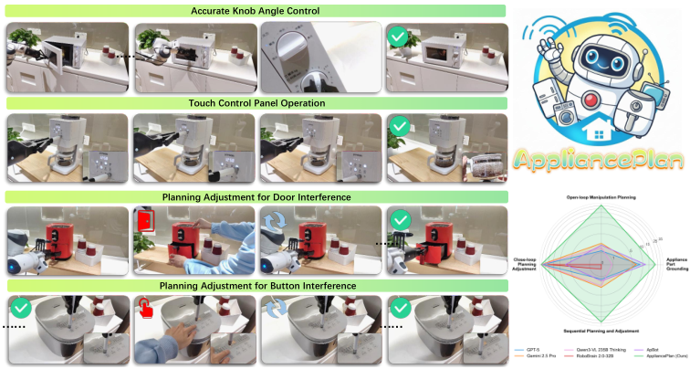
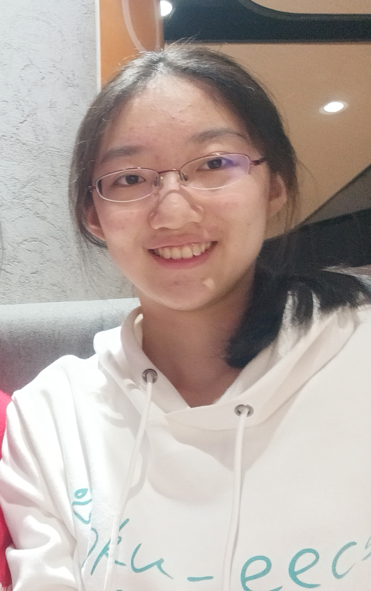
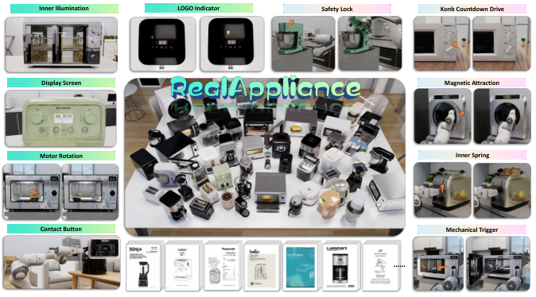
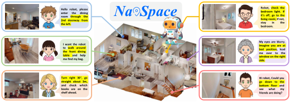

ACM Multimedia 2026
Scaling Manual-Grounded Appliance Manipulation with Data Synthesis and Unified Planning
We use appliance manuals to generate structured training data for part grounding, long-horizon planning, and plan adjustment.

I am an undergraduate student in the Turing Class at Peking University, studying Computer Science and expecting to graduate in 2027.
I work with Prof. Hao Dong at the PKU-Agibot Lab. My research interests include robot learning, reliable manipulation, and predictive models for robot control.
Email (yuziyan2023@stu.pku.edu.cn)
* Equal contribution.

ACM Multimedia 2026
We use appliance manuals to generate structured training data for part grounding, long-horizon planning, and plan adjustment.

CVPR 2026, Highlight
We build 100 manual-aligned appliance assets across 14 categories to evaluate appliance understanding and manipulation planning.

ICRA 2026
We evaluate spatial instruction following with 1,228 trajectory-instruction pairs and 22 navigation agents.
Advisor: Prof. Hao Dong.
Advisor: Prof. Zhouhui Lian.
B.S. in Computer Science, Turing Class.
High School.